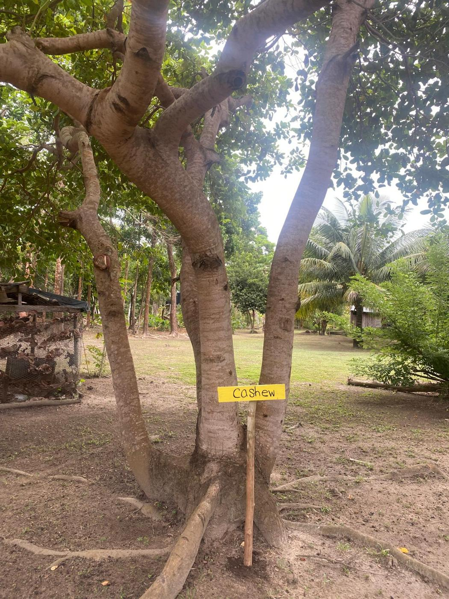
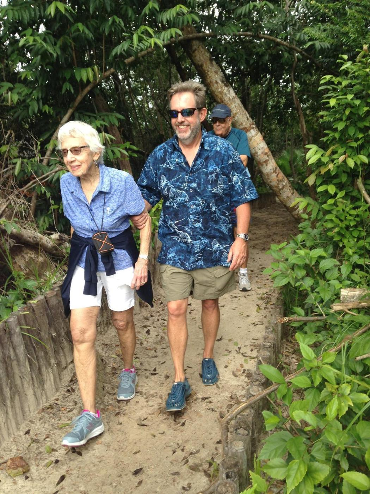
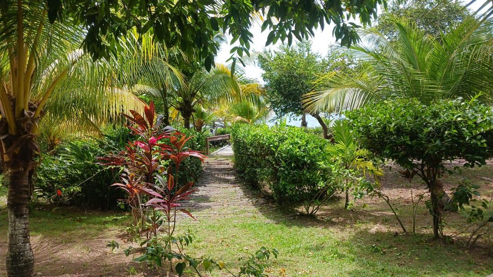
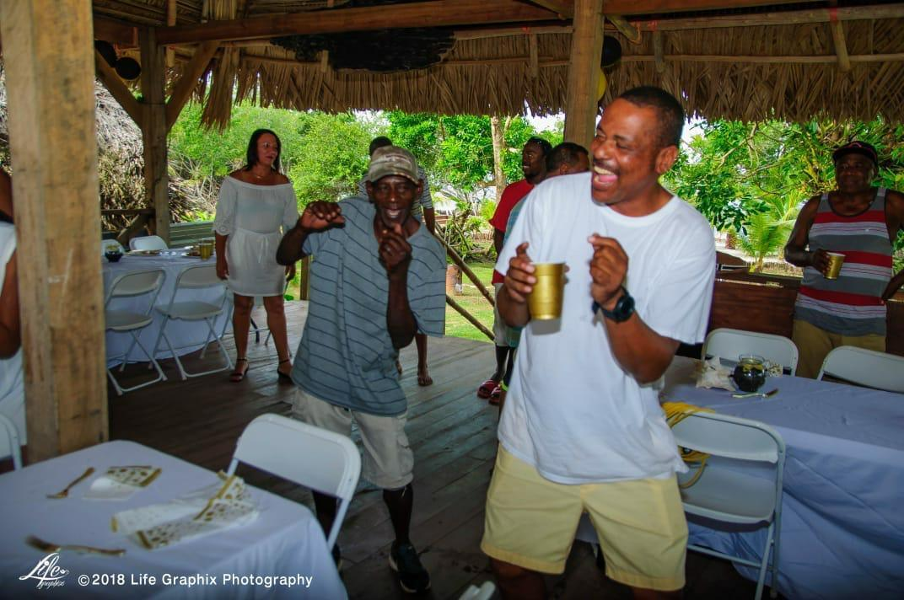

Meet the fruit trees growing right on the island, from cashew and coconut to plantains grown and harvested on site, and taste what is in season.
Prices, hours and availability can change by season. Contact us to confirm details and book.

Walk our handmade walkway and gain a complete rainforest experience right on the island, with a great plethora of diversity to discover.
View details
Walk through our garden and farm, and learn about natural remedies, herbs and the plants Belizeans have used for generations.
View details
Take a tour of the island with our licensed guides, with culture, food, trails and music rolled into one visit.
View detailsTell us your dates and group size and we will help plan the perfect stay.
Plan a visit